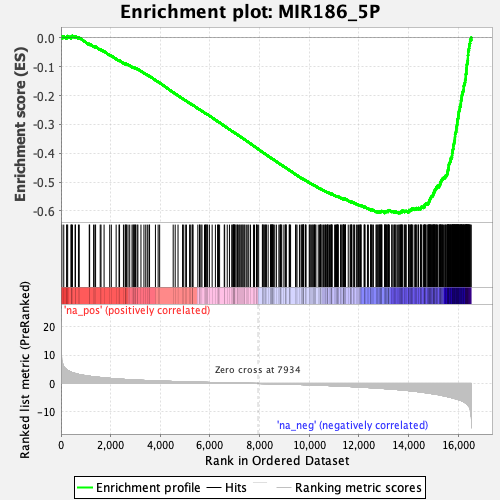
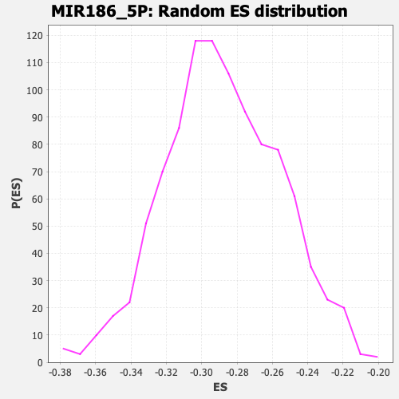

| | | Dataset | DE_genes2 |
| Phenotype | NoPhenotypeAvailable |
| Upregulated in class | na_neg |
| GeneSet | MIR186_5P |
| Enrichment Score (ES) | -0.6075747 |
| Normalized Enrichment Score (NES) | -2.1090593 |
| Nominal p-value | 0.0 |
| FDR q-value | 0.0 |
| FWER p-Value | 0.0 |
Table: GSEA Results Summary

Fig 1: Enrichment plot: MIR186_5P
Profile of the Running ES Score & Positions of GeneSet Members on the Rank Ordered List
| PROBE | GENE SYMBOL | GENE_TITLE | RANK IN GENE LIST | RANK METRIC SCORE | RUNNING ES | CORE ENRICHMENT | | 1 | RHBDF2 | | | 35 | 8.045 | 0.0042 | No |
| 2 | GPC6 | | | 111 | 5.859 | 0.0042 | No |
| 3 | FERMT1 | | | 228 | 4.803 | 0.0008 | No |
| 4 | SPECC1 | | | 240 | 4.738 | 0.0039 | No |
| 5 | CTSB | | | 269 | 4.585 | 0.0058 | No |
| 6 | POFUT2 | | | 406 | 3.953 | 0.0005 | No |
| 7 | RAB11B | | | 411 | 3.939 | 0.0034 | No |
| 8 | FNDC3B | | | 427 | 3.886 | 0.0056 | No |
| 9 | PID1 | | | 461 | 3.806 | 0.0066 | No |
| 10 | LRRC41 | | | 568 | 3.511 | 0.0028 | No |
| 11 | ZNF710 | | | 582 | 3.465 | 0.0047 | No |
| 12 | GSTM3 | | | 703 | 3.201 | -0.0002 | No |
| 13 | CDK5R1 | | | 734 | 3.136 | 0.0004 | No |
| 14 | SPRYD3 | | | 1138 | 2.555 | -0.0227 | No |
| 15 | NCSTN | | | 1153 | 2.533 | -0.0215 | No |
| 16 | SELL | | | 1312 | 2.345 | -0.0295 | No |
| 17 | LMO4 | | | 1364 | 2.299 | -0.0308 | No |
| 18 | WWP2 | | | 1393 | 2.274 | -0.0308 | No |
| 19 | EXOC7 | | | 1579 | 2.107 | -0.0406 | No |
| 20 | TSPAN31 | | | 1611 | 2.081 | -0.0409 | No |
| 21 | ART3 | | | 1735 | 1.960 | -0.0470 | No |
| 22 | MAP4 | | | 1962 | 1.785 | -0.0597 | No |
| 23 | GJA1 | | | 2027 | 1.737 | -0.0623 | No |
| 24 | COPG2 | | | 2221 | 1.604 | -0.0730 | No |
| 25 | AKIRIN1 | | | 2336 | 1.539 | -0.0789 | No |
| 26 | OAS2 | | | 2358 | 1.520 | -0.0790 | No |
| 27 | CREB3L2 | | | 2515 | 1.435 | -0.0876 | No |
| 28 | MATN3 | | | 2581 | 1.398 | -0.0905 | No |
| 29 | DTX3L | | | 2610 | 1.382 | -0.0911 | No |
| 30 | FUT8 | | | 2611 | 1.382 | -0.0900 | No |
| 31 | GBP2 | | | 2643 | 1.365 | -0.0909 | No |
| 32 | ATP9A | | | 2699 | 1.338 | -0.0932 | No |
| 33 | ZFAND3 | | | 2767 | 1.303 | -0.0964 | No |
| 34 | CGNL1 | | | 2861 | 1.261 | -0.1012 | No |
| 35 | TMBIM4 | | | 2904 | 1.237 | -0.1028 | No |
| 36 | ANO6 | | | 2929 | 1.226 | -0.1033 | No |
| 37 | CASP10 | | | 2967 | 1.210 | -0.1047 | No |
| 38 | CHP1 | | | 2984 | 1.202 | -0.1047 | No |
| 39 | SORT1 | | | 3003 | 1.195 | -0.1049 | No |
| 40 | TMEM183A | | | 3064 | 1.170 | -0.1077 | No |
| 41 | KCTD16 | | | 3096 | 1.155 | -0.1087 | No |
| 42 | SIDT1 | | | 3220 | 1.103 | -0.1155 | No |
| 43 | GPR37 | | | 3340 | 1.061 | -0.1220 | No |
| 44 | PTP4A2 | | | 3413 | 1.033 | -0.1257 | No |
| 45 | FRMD4A | | | 3476 | 1.012 | -0.1288 | No |
| 46 | MN1 | | | 3545 | 0.991 | -0.1322 | No |
| 47 | HOXB2 | | | 3566 | 0.983 | -0.1327 | No |
| 48 | NR4A2 | | | 3803 | 0.894 | -0.1467 | No |
| 49 | LRRN1 | | | 3912 | 0.864 | -0.1527 | No |
| 50 | CNTNAP2 | | | 3973 | 0.845 | -0.1558 | No |
| 51 | LNX1 | | | 4518 | 0.688 | -0.1891 | No |
| 52 | ARMC3 | | | 4599 | 0.662 | -0.1936 | No |
| 53 | ZFP3 | | | 4713 | 0.635 | -0.2001 | No |
| 54 | ZNF599 | | | 4896 | 0.595 | -0.2110 | No |
| 55 | TCTEX1D1 | | | 4926 | 0.587 | -0.2123 | No |
| 56 | PXDC1 | | | 5004 | 0.569 | -0.2167 | No |
| 57 | PUM1 | | | 5052 | 0.557 | -0.2192 | No |
| 58 | FOXA1 | | | 5180 | 0.524 | -0.2267 | No |
| 59 | SAYSD1 | | | 5207 | 0.517 | -0.2279 | No |
| 60 | DUSP7 | | | 5278 | 0.497 | -0.2318 | No |
| 61 | MACC1 | | | 5307 | 0.490 | -0.2332 | No |
| 62 | LINGO2 | | | 5313 | 0.489 | -0.2331 | No |
| 63 | PLCG2 | | | 5511 | 0.448 | -0.2450 | No |
| 64 | RBFOX2 | | | 5577 | 0.432 | -0.2488 | No |
| 65 | CAMLG | | | 5588 | 0.429 | -0.2490 | No |
| 66 | ADAM8 | | | 5635 | 0.419 | -0.2516 | No |
| 67 | TMEM71 | | | 5677 | 0.410 | -0.2538 | No |
| 68 | CEP41 | | | 5779 | 0.389 | -0.2598 | No |
| 69 | NDEL1 | | | 5819 | 0.381 | -0.2619 | No |
| 70 | PROSER2 | | | 5839 | 0.378 | -0.2628 | No |
| 71 | LPAR5 | | | 5843 | 0.376 | -0.2627 | No |
| 72 | ZNF699 | | | 5881 | 0.370 | -0.2647 | No |
| 73 | ARHGEF38 | | | 5906 | 0.364 | -0.2659 | No |
| 74 | CXCL13 | | | 5976 | 0.350 | -0.2699 | No |
| 75 | AK7 | | | 6087 | 0.328 | -0.2765 | No |
| 76 | YBX3 | | | 6218 | 0.298 | -0.2844 | No |
| 77 | PPM1L | | | 6306 | 0.285 | -0.2896 | No |
| 78 | ERC2 | | | 6332 | 0.280 | -0.2909 | No |
| 79 | CALB1 | | | 6341 | 0.277 | -0.2912 | No |
| 80 | EPN2 | | | 6387 | 0.266 | -0.2938 | No |
| 81 | PCDHB6 | | | 6574 | 0.228 | -0.3052 | No |
| 82 | PCSK5 | | | 6591 | 0.224 | -0.3060 | No |
| 83 | NOG | | | 6695 | 0.203 | -0.3123 | No |
| 84 | HIPK1 | | | 6784 | 0.187 | -0.3176 | No |
| 85 | SLC16A9 | | | 6876 | 0.174 | -0.3231 | No |
| 86 | HNMT | | | 6915 | 0.168 | -0.3254 | No |
| 87 | ZNF608 | | | 6940 | 0.165 | -0.3267 | No |
| 88 | PDGFA | | | 6944 | 0.164 | -0.3268 | No |
| 89 | MAP3K12 | | | 6947 | 0.164 | -0.3268 | No |
| 90 | TRHDE | | | 6988 | 0.158 | -0.3292 | No |
| 91 | TNIK | | | 6994 | 0.156 | -0.3293 | No |
| 92 | TRPV1 | | | 7003 | 0.155 | -0.3297 | No |
| 93 | HEY1 | | | 7047 | 0.146 | -0.3323 | No |
| 94 | FRMD4B | | | 7098 | 0.135 | -0.3353 | No |
| 95 | ATL2 | | | 7102 | 0.134 | -0.3354 | No |
| 96 | TMPRSS11F | | | 7157 | 0.124 | -0.3386 | No |
| 97 | ZNF117 | | | 7201 | 0.116 | -0.3412 | No |
| 98 | SLC44A5 | | | 7214 | 0.114 | -0.3419 | No |
| 99 | ZNF736 | | | 7280 | 0.101 | -0.3459 | No |
| 100 | TTPAL | | | 7293 | 0.099 | -0.3465 | No |
| 101 | SIPA1L3 | | | 7335 | 0.092 | -0.3490 | No |
| 102 | CYYR1 | | | 7375 | 0.084 | -0.3514 | No |
| 103 | AFF1 | | | 7405 | 0.080 | -0.3531 | No |
| 104 | MCC | | | 7462 | 0.072 | -0.3565 | No |
| 105 | TMTC1 | | | 7524 | 0.060 | -0.3603 | No |
| 106 | SATB1 | | | 7563 | 0.055 | -0.3626 | No |
| 107 | RIMS2 | | | 7633 | 0.042 | -0.3669 | No |
| 108 | KCNH1 | | | 7751 | 0.024 | -0.3742 | No |
| 109 | SH3RF1 | | | 7793 | 0.019 | -0.3767 | No |
| 110 | DLC1 | | | 7871 | 0.008 | -0.3815 | No |
| 111 | DMD | | | 7872 | 0.008 | -0.3815 | No |
| 112 | IRX2 | | | 7909 | 0.003 | -0.3837 | No |
| 113 | TULP4 | | | 7961 | -0.005 | -0.3869 | No |
| 114 | CROT | | | 8109 | -0.028 | -0.3960 | No |
| 115 | ATP6V1C2 | | | 8122 | -0.030 | -0.3968 | No |
| 116 | ZNF503 | | | 8136 | -0.031 | -0.3976 | No |
| 117 | EPB41L4B | | | 8172 | -0.037 | -0.3997 | No |
| 118 | IKZF2 | | | 8186 | -0.040 | -0.4005 | No |
| 119 | UBE2R2 | | | 8242 | -0.048 | -0.4039 | No |
| 120 | PIN4 | | | 8249 | -0.048 | -0.4042 | No |
| 121 | SSBP2 | | | 8272 | -0.052 | -0.4055 | No |
| 122 | FKBP7 | | | 8342 | -0.064 | -0.4098 | No |
| 123 | MAP2 | | | 8440 | -0.083 | -0.4158 | No |
| 124 | ONECUT2 | | | 8448 | -0.084 | -0.4161 | No |
| 125 | RUFY3 | | | 8458 | -0.086 | -0.4166 | No |
| 126 | CEPT1 | | | 8468 | -0.087 | -0.4171 | No |
| 127 | HYOU1 | | | 8483 | -0.089 | -0.4179 | No |
| 128 | PDE1C | | | 8506 | -0.094 | -0.4192 | No |
| 129 | CA8 | | | 8509 | -0.095 | -0.4193 | No |
| 130 | RIOK3 | | | 8526 | -0.098 | -0.4202 | No |
| 131 | SPATA6 | | | 8539 | -0.100 | -0.4209 | No |
| 132 | ZMAT3 | | | 8549 | -0.102 | -0.4213 | No |
| 133 | KLF7 | | | 8607 | -0.110 | -0.4248 | No |
| 134 | HERPUD2 | | | 8674 | -0.124 | -0.4288 | No |
| 135 | KDSR | | | 8775 | -0.148 | -0.4349 | No |
| 136 | GLT8D2 | | | 8815 | -0.154 | -0.4372 | No |
| 137 | MTF1 | | | 8848 | -0.161 | -0.4391 | No |
| 138 | CLCA2 | | | 8849 | -0.161 | -0.4390 | No |
| 139 | CYP39A1 | | | 8856 | -0.162 | -0.4392 | No |
| 140 | WDR44 | | | 8890 | -0.169 | -0.4411 | No |
| 141 | KIAA1324L | | | 8977 | -0.188 | -0.4464 | No |
| 142 | PRKAR2B | | | 9031 | -0.200 | -0.4495 | No |
| 143 | MAP7 | | | 9054 | -0.205 | -0.4507 | No |
| 144 | CNTNAP1 | | | 9060 | -0.205 | -0.4509 | No |
| 145 | MAPK1 | | | 9065 | -0.206 | -0.4509 | No |
| 146 | SESN3 | | | 9190 | -0.236 | -0.4585 | No |
| 147 | EIF2D | | | 9202 | -0.240 | -0.4590 | No |
| 148 | STAU2 | | | 9221 | -0.246 | -0.4599 | No |
| 149 | ASCC1 | | | 9246 | -0.254 | -0.4612 | No |
| 150 | ZNF713 | | | 9446 | -0.302 | -0.4734 | No |
| 151 | BRD1 | | | 9465 | -0.305 | -0.4742 | No |
| 152 | ARAP2 | | | 9505 | -0.314 | -0.4764 | No |
| 153 | UBE2N | | | 9603 | -0.340 | -0.4822 | No |
| 154 | NSD1 | | | 9667 | -0.359 | -0.4858 | No |
| 155 | PSME4 | | | 9698 | -0.368 | -0.4874 | No |
| 156 | EPC1 | | | 9714 | -0.373 | -0.4880 | No |
| 157 | DNAJC8 | | | 9740 | -0.380 | -0.4893 | No |
| 158 | KLHL31 | | | 9753 | -0.386 | -0.4897 | No |
| 159 | PAK2 | | | 9756 | -0.387 | -0.4896 | No |
| 160 | PLSCR4 | | | 9761 | -0.389 | -0.4895 | No |
| 161 | ENTPD5 | | | 9773 | -0.392 | -0.4899 | No |
| 162 | FAM122A | | | 9841 | -0.412 | -0.4937 | No |
| 163 | UNC5C | | | 9846 | -0.414 | -0.4936 | No |
| 164 | MOB3B | | | 9870 | -0.419 | -0.4947 | No |
| 165 | RAB6A | | | 9997 | -0.460 | -0.5022 | No |
| 166 | FEZ2 | | | 10026 | -0.468 | -0.5036 | No |
| 167 | PRTG | | | 10031 | -0.469 | -0.5035 | No |
| 168 | ZSCAN25 | | | 10079 | -0.483 | -0.5060 | No |
| 169 | S100PBP | | | 10115 | -0.495 | -0.5078 | No |
| 170 | PSD3 | | | 10153 | -0.510 | -0.5097 | No |
| 171 | PDK3 | | | 10157 | -0.512 | -0.5095 | No |
| 172 | ASTN2 | | | 10210 | -0.528 | -0.5123 | No |
| 173 | TBL1XR1 | | | 10213 | -0.529 | -0.5120 | No |
| 174 | TNRC6B | | | 10236 | -0.535 | -0.5129 | No |
| 175 | FOXD1 | | | 10266 | -0.543 | -0.5143 | No |
| 176 | SLFN13 | | | 10360 | -0.572 | -0.5197 | No |
| 177 | RNF180 | | | 10414 | -0.591 | -0.5225 | No |
| 178 | MAPKAPK5 | | | 10439 | -0.600 | -0.5235 | No |
| 179 | CASK | | | 10449 | -0.602 | -0.5236 | No |
| 180 | WNK3 | | | 10457 | -0.605 | -0.5235 | No |
| 181 | RTCA | | | 10473 | -0.611 | -0.5240 | No |
| 182 | VPS4B | | | 10518 | -0.632 | -0.5262 | No |
| 183 | ZNF776 | | | 10568 | -0.650 | -0.5288 | No |
| 184 | AHR | | | 10601 | -0.664 | -0.5302 | No |
| 185 | UBQLN2 | | | 10643 | -0.676 | -0.5322 | No |
| 186 | BCAR3 | | | 10651 | -0.678 | -0.5321 | No |
| 187 | DGKH | | | 10687 | -0.688 | -0.5338 | No |
| 188 | VPS13B | | | 10737 | -0.703 | -0.5363 | No |
| 189 | ABL2 | | | 10745 | -0.707 | -0.5361 | No |
| 190 | SRPK1 | | | 10746 | -0.707 | -0.5356 | No |
| 191 | ZADH2 | | | 10752 | -0.709 | -0.5353 | No |
| 192 | CACNB4 | | | 10814 | -0.732 | -0.5385 | No |
| 193 | ZXDB | | | 10860 | -0.745 | -0.5408 | No |
| 194 | ZKSCAN8 | | | 10874 | -0.756 | -0.5410 | No |
| 195 | PPM1F | | | 10887 | -0.761 | -0.5411 | No |
| 196 | SGMS2 | | | 10897 | -0.765 | -0.5411 | No |
| 197 | DOCK2 | | | 10912 | -0.770 | -0.5413 | No |
| 198 | MRPS10 | | | 10914 | -0.771 | -0.5408 | No |
| 199 | SLAIN2 | | | 11020 | -0.808 | -0.5467 | No |
| 200 | WDR20 | | | 11055 | -0.826 | -0.5481 | No |
| 201 | CCDC50 | | | 11084 | -0.836 | -0.5492 | No |
| 202 | SERP1 | | | 11095 | -0.840 | -0.5491 | No |
| 203 | ZMYM2 | | | 11123 | -0.850 | -0.5502 | No |
| 204 | IRF8 | | | 11133 | -0.854 | -0.5500 | No |
| 205 | VSX1 | | | 11136 | -0.855 | -0.5495 | No |
| 206 | CREBRF | | | 11160 | -0.865 | -0.5502 | No |
| 207 | KDM7A | | | 11163 | -0.866 | -0.5497 | No |
| 208 | KPNA1 | | | 11259 | -0.906 | -0.5549 | No |
| 209 | C17orf58 | | | 11273 | -0.914 | -0.5549 | No |
| 210 | UBR2 | | | 11308 | -0.929 | -0.5563 | No |
| 211 | ATXN7 | | | 11357 | -0.952 | -0.5585 | No |
| 212 | RNF2 | | | 11364 | -0.953 | -0.5582 | No |
| 213 | NPHP3 | | | 11373 | -0.958 | -0.5579 | No |
| 214 | LRRC66 | | | 11374 | -0.958 | -0.5571 | No |
| 215 | UGGT1 | | | 11390 | -0.964 | -0.5573 | No |
| 216 | GK5 | | | 11416 | -0.977 | -0.5581 | No |
| 217 | PDCD4 | | | 11434 | -0.982 | -0.5583 | No |
| 218 | PCMTD1 | | | 11457 | -0.989 | -0.5589 | No |
| 219 | CAPS2 | | | 11458 | -0.990 | -0.5581 | No |
| 220 | NFAT5 | | | 11568 | -1.034 | -0.5641 | No |
| 221 | WASL | | | 11643 | -1.062 | -0.5679 | No |
| 222 | ANGPT2 | | | 11673 | -1.077 | -0.5688 | No |
| 223 | COBLL1 | | | 11674 | -1.077 | -0.5680 | No |
| 224 | RPS3 | | | 11701 | -1.086 | -0.5687 | No |
| 225 | IGSF11 | | | 11702 | -1.086 | -0.5678 | No |
| 226 | LRP12 | | | 11766 | -1.114 | -0.5709 | No |
| 227 | C14orf132 | | | 11798 | -1.133 | -0.5719 | No |
| 228 | PEG3 | | | 11824 | -1.141 | -0.5726 | No |
| 229 | CADM2 | | | 11895 | -1.177 | -0.5760 | No |
| 230 | HMGN4 | | | 11934 | -1.190 | -0.5774 | No |
| 231 | INO80D | | | 11983 | -1.212 | -0.5794 | No |
| 232 | CPEB3 | | | 12009 | -1.225 | -0.5800 | No |
| 233 | GNG12 | | | 12036 | -1.238 | -0.5806 | No |
| 234 | SPTLC1 | | | 12068 | -1.255 | -0.5816 | No |
| 235 | ZFY | | | 12070 | -1.257 | -0.5806 | No |
| 236 | ITGA6 | | | 12086 | -1.267 | -0.5806 | No |
| 237 | TIGAR | | | 12208 | -1.331 | -0.5870 | No |
| 238 | STK3 | | | 12217 | -1.334 | -0.5865 | No |
| 239 | NIT2 | | | 12224 | -1.339 | -0.5858 | No |
| 240 | DCBLD2 | | | 12246 | -1.348 | -0.5860 | No |
| 241 | VEGFA | | | 12342 | -1.396 | -0.5908 | No |
| 242 | RIC8B | | | 12379 | -1.418 | -0.5919 | No |
| 243 | ARFGEF1 | | | 12474 | -1.466 | -0.5966 | No |
| 244 | RC3H2 | | | 12478 | -1.467 | -0.5956 | No |
| 245 | BCOR | | | 12480 | -1.467 | -0.5945 | No |
| 246 | GPCPD1 | | | 12511 | -1.477 | -0.5952 | No |
| 247 | FAM126B | | | 12556 | -1.508 | -0.5968 | No |
| 248 | SALL1 | | | 12580 | -1.524 | -0.5970 | No |
| 249 | GPATCH2L | | | 12688 | -1.584 | -0.6024 | No |
| 250 | ATAD1 | | | 12700 | -1.588 | -0.6018 | No |
| 251 | RAB2A | | | 12757 | -1.620 | -0.6040 | No |
| 252 | BRWD3 | | | 12760 | -1.622 | -0.6028 | No |
| 253 | ITPR2 | | | 12798 | -1.647 | -0.6038 | No |
| 254 | CDK6 | | | 12820 | -1.666 | -0.6038 | No |
| 255 | CCDC84 | | | 12845 | -1.685 | -0.6040 | No |
| 256 | MFHAS1 | | | 12852 | -1.690 | -0.6030 | No |
| 257 | PHF21B | | | 12857 | -1.692 | -0.6019 | No |
| 258 | ZNF706 | | | 12878 | -1.700 | -0.6018 | No |
| 259 | PIK3CA | | | 12907 | -1.721 | -0.6021 | No |
| 260 | XPR1 | | | 12913 | -1.723 | -0.6011 | No |
| 261 | PDE10A | | | 12923 | -1.729 | -0.6003 | No |
| 262 | SLC30A7 | | | 13034 | -1.787 | -0.6057 | No |
| 263 | MCFD2 | | | 13045 | -1.795 | -0.6049 | No |
| 264 | REEP3 | | | 13054 | -1.802 | -0.6039 | No |
| 265 | GOLT1B | | | 13056 | -1.803 | -0.6026 | No |
| 266 | RIC1 | | | 13058 | -1.804 | -0.6012 | No |
| 267 | LHX2 | | | 13099 | -1.824 | -0.6022 | No |
| 268 | TSC22D2 | | | 13103 | -1.826 | -0.6010 | No |
| 269 | STEAP2 | | | 13135 | -1.849 | -0.6014 | No |
| 270 | PCLO | | | 13170 | -1.872 | -0.6020 | No |
| 271 | TMEM65 | | | 13179 | -1.879 | -0.6010 | No |
| 272 | TRUB1 | | | 13181 | -1.880 | -0.5996 | No |
| 273 | RNF217 | | | 13183 | -1.882 | -0.5982 | No |
| 274 | CANX | | | 13199 | -1.890 | -0.5976 | No |
| 275 | LUZP2 | | | 13224 | -1.906 | -0.5976 | No |
| 276 | OXSR1 | | | 13320 | -1.967 | -0.6019 | No |
| 277 | ZNRF3 | | | 13330 | -1.976 | -0.6009 | No |
| 278 | FBXO33 | | | 13376 | -2.012 | -0.6021 | No |
| 279 | ALDH6A1 | | | 13422 | -2.039 | -0.6033 | No |
| 280 | MAPK9 | | | 13436 | -2.054 | -0.6025 | No |
| 281 | TIPARP | | | 13483 | -2.090 | -0.6037 | No |
| 282 | BMPR1A | | | 13491 | -2.095 | -0.6024 | No |
| 283 | ZC3H12B | | | 13558 | -2.138 | -0.6048 | No |
| 284 | SYAP1 | | | 13603 | -2.163 | -0.6058 | Yes |
| 285 | PLS3 | | | 13619 | -2.177 | -0.6050 | Yes |
| 286 | C8orf37 | | | 13651 | -2.198 | -0.6052 | Yes |
| 287 | MAPK1IP1L | | | 13677 | -2.221 | -0.6050 | Yes |
| 288 | DENND1B | | | 13680 | -2.223 | -0.6034 | Yes |
| 289 | NCBP2 | | | 13718 | -2.255 | -0.6039 | Yes |
| 290 | AZIN1 | | | 13720 | -2.257 | -0.6021 | Yes |
| 291 | TMEM168 | | | 13725 | -2.260 | -0.6006 | Yes |
| 292 | STK17B | | | 13738 | -2.270 | -0.5995 | Yes |
| 293 | PPP3CB | | | 13767 | -2.299 | -0.5994 | Yes |
| 294 | ACSS3 | | | 13839 | -2.364 | -0.6020 | Yes |
| 295 | CHURC1 | | | 13846 | -2.368 | -0.6005 | Yes |
| 296 | TMEM245 | | | 13878 | -2.396 | -0.6005 | Yes |
| 297 | FAM114A2 | | | 13904 | -2.417 | -0.6001 | Yes |
| 298 | APPBP2 | | | 13993 | -2.492 | -0.6036 | Yes |
| 299 | USP25 | | | 14002 | -2.495 | -0.6021 | Yes |
| 300 | KPNA3 | | | 14006 | -2.498 | -0.6003 | Yes |
| 301 | PAK3 | | | 14014 | -2.505 | -0.5987 | Yes |
| 302 | PABPC1 | | | 14018 | -2.508 | -0.5969 | Yes |
| 303 | SEC63 | | | 14069 | -2.571 | -0.5980 | Yes |
| 304 | ARIH1 | | | 14082 | -2.580 | -0.5967 | Yes |
| 305 | PPP1CC | | | 14114 | -2.608 | -0.5965 | Yes |
| 306 | HOOK3 | | | 14115 | -2.611 | -0.5944 | Yes |
| 307 | ZBTB39 | | | 14130 | -2.622 | -0.5932 | Yes |
| 308 | VPS13C | | | 14138 | -2.631 | -0.5916 | Yes |
| 309 | TCFL5 | | | 14170 | -2.660 | -0.5914 | Yes |
| 310 | TSR1 | | | 14247 | -2.740 | -0.5939 | Yes |
| 311 | MBTPS2 | | | 14272 | -2.756 | -0.5932 | Yes |
| 312 | CAMSAP2 | | | 14274 | -2.758 | -0.5911 | Yes |
| 313 | FAM120A | | | 14328 | -2.811 | -0.5921 | Yes |
| 314 | PACRGL | | | 14332 | -2.814 | -0.5901 | Yes |
| 315 | BCAT1 | | | 14397 | -2.877 | -0.5918 | Yes |
| 316 | FZD3 | | | 14403 | -2.879 | -0.5898 | Yes |
| 317 | ASPH | | | 14481 | -2.970 | -0.5922 | Yes |
| 318 | SRSF12 | | | 14486 | -2.973 | -0.5901 | Yes |
| 319 | HECTD2 | | | 14493 | -2.983 | -0.5881 | Yes |
| 320 | TMF1 | | | 14504 | -2.989 | -0.5863 | Yes |
| 321 | MIB1 | | | 14530 | -3.025 | -0.5855 | Yes |
| 322 | SPRYD7 | | | 14595 | -3.105 | -0.5870 | Yes |
| 323 | PPM1B | | | 14621 | -3.139 | -0.5860 | Yes |
| 324 | DZIP1 | | | 14644 | -3.178 | -0.5849 | Yes |
| 325 | GCLM | | | 14646 | -3.180 | -0.5824 | Yes |
| 326 | OTUD4 | | | 14649 | -3.183 | -0.5800 | Yes |
| 327 | EPC2 | | | 14651 | -3.185 | -0.5775 | Yes |
| 328 | C12orf29 | | | 14682 | -3.220 | -0.5768 | Yes |
| 329 | XRN1 | | | 14695 | -3.238 | -0.5750 | Yes |
| 330 | FSD1L | | | 14743 | -3.299 | -0.5753 | Yes |
| 331 | LPIN1 | | | 14777 | -3.334 | -0.5747 | Yes |
| 332 | ZBTB20 | | | 14794 | -3.351 | -0.5730 | Yes |
| 333 | PKN2 | | | 14803 | -3.362 | -0.5708 | Yes |
| 334 | PPM1A | | | 14816 | -3.381 | -0.5689 | Yes |
| 335 | SCAI | | | 14827 | -3.393 | -0.5668 | Yes |
| 336 | DENND4A | | | 14834 | -3.402 | -0.5644 | Yes |
| 337 | MAN1A2 | | | 14847 | -3.421 | -0.5625 | Yes |
| 338 | MAP3K2 | | | 14856 | -3.434 | -0.5602 | Yes |
| 339 | RAB21 | | | 14865 | -3.444 | -0.5580 | Yes |
| 340 | URI1 | | | 14874 | -3.461 | -0.5557 | Yes |
| 341 | PDIK1L | | | 14889 | -3.488 | -0.5538 | Yes |
| 342 | BBX | | | 14901 | -3.506 | -0.5517 | Yes |
| 343 | GCC2 | | | 14917 | -3.536 | -0.5498 | Yes |
| 344 | AMD1 | | | 14940 | -3.564 | -0.5483 | Yes |
| 345 | ZC3H11A | | | 14966 | -3.594 | -0.5470 | Yes |
| 346 | CPNE3 | | | 14985 | -3.622 | -0.5453 | Yes |
| 347 | SLC36A4 | | | 14988 | -3.629 | -0.5425 | Yes |
| 348 | TEAD1 | | | 14994 | -3.642 | -0.5399 | Yes |
| 349 | YY1 | | | 14997 | -3.649 | -0.5371 | Yes |
| 350 | SHPRH | | | 15020 | -3.669 | -0.5355 | Yes |
| 351 | MBNL2 | | | 15039 | -3.698 | -0.5337 | Yes |
| 352 | MTMR7 | | | 15040 | -3.701 | -0.5308 | Yes |
| 353 | DHX15 | | | 15053 | -3.733 | -0.5285 | Yes |
| 354 | CEP170 | | | 15061 | -3.736 | -0.5260 | Yes |
| 355 | RALGPS2 | | | 15092 | -3.779 | -0.5248 | Yes |
| 356 | ZWINT | | | 15107 | -3.798 | -0.5227 | Yes |
| 357 | MAP4K3 | | | 15110 | -3.799 | -0.5198 | Yes |
| 358 | RBM28 | | | 15119 | -3.808 | -0.5172 | Yes |
| 359 | SIRT1 | | | 15154 | -3.852 | -0.5163 | Yes |
| 360 | XPOT | | | 15155 | -3.853 | -0.5132 | Yes |
| 361 | RAP2C | | | 15227 | -3.960 | -0.5145 | Yes |
| 362 | TMED7 | | | 15231 | -3.969 | -0.5115 | Yes |
| 363 | MIER1 | | | 15244 | -3.993 | -0.5091 | Yes |
| 364 | ARMC8 | | | 15269 | -4.063 | -0.5073 | Yes |
| 365 | FXR1 | | | 15273 | -4.071 | -0.5043 | Yes |
| 366 | SUCLA2 | | | 15282 | -4.085 | -0.5015 | Yes |
| 367 | ARHGAP5 | | | 15292 | -4.102 | -0.4988 | Yes |
| 368 | SPRED1 | | | 15304 | -4.118 | -0.4962 | Yes |
| 369 | API5 | | | 15329 | -4.166 | -0.4944 | Yes |
| 370 | UBE3A | | | 15338 | -4.180 | -0.4915 | Yes |
| 371 | PDE3B | | | 15361 | -4.223 | -0.4895 | Yes |
| 372 | CHD9 | | | 15371 | -4.244 | -0.4867 | Yes |
| 373 | NCOA3 | | | 15401 | -4.298 | -0.4851 | Yes |
| 374 | ZNF644 | | | 15434 | -4.362 | -0.4836 | Yes |
| 375 | KCNT2 | | | 15474 | -4.437 | -0.4825 | Yes |
| 376 | TRAPPC8 | | | 15475 | -4.438 | -0.4789 | Yes |
| 377 | RPS6KA3 | | | 15496 | -4.469 | -0.4766 | Yes |
| 378 | UBE2K | | | 15537 | -4.568 | -0.4755 | Yes |
| 379 | ZFHX3 | | | 15548 | -4.579 | -0.4724 | Yes |
| 380 | CHM | | | 15562 | -4.616 | -0.4696 | Yes |
| 381 | NEK7 | | | 15567 | -4.627 | -0.4661 | Yes |
| 382 | STXBP5 | | | 15570 | -4.632 | -0.4625 | Yes |
| 383 | DDX46 | | | 15583 | -4.664 | -0.4596 | Yes |
| 384 | PDE4D | | | 15587 | -4.675 | -0.4560 | Yes |
| 385 | PHIP | | | 15609 | -4.738 | -0.4536 | Yes |
| 386 | TARDBP | | | 15610 | -4.742 | -0.4498 | Yes |
| 387 | MOB1B | | | 15615 | -4.752 | -0.4462 | Yes |
| 388 | NR1D2 | | | 15617 | -4.753 | -0.4425 | Yes |
| 389 | CCDC112 | | | 15622 | -4.762 | -0.4390 | Yes |
| 390 | CHIC1 | | | 15632 | -4.780 | -0.4357 | Yes |
| 391 | QKI | | | 15650 | -4.807 | -0.4329 | Yes |
| 392 | SP4 | | | 15666 | -4.846 | -0.4300 | Yes |
| 393 | DYNC2H1 | | | 15681 | -4.874 | -0.4270 | Yes |
| 394 | XIAP | | | 15692 | -4.892 | -0.4237 | Yes |
| 395 | PRPF38B | | | 15698 | -4.909 | -0.4201 | Yes |
| 396 | DCUN1D4 | | | 15701 | -4.910 | -0.4163 | Yes |
| 397 | CLPX | | | 15738 | -4.986 | -0.4146 | Yes |
| 398 | TRMT10A | | | 15746 | -5.005 | -0.4110 | Yes |
| 399 | TOB1 | | | 15748 | -5.007 | -0.4071 | Yes |
| 400 | ACTR2 | | | 15753 | -5.013 | -0.4033 | Yes |
| 401 | PDS5B | | | 15754 | -5.018 | -0.3993 | Yes |
| 402 | ACSL4 | | | 15767 | -5.041 | -0.3961 | Yes |
| 403 | FNIP1 | | | 15774 | -5.059 | -0.3924 | Yes |
| 404 | FAM76B | | | 15776 | -5.062 | -0.3884 | Yes |
| 405 | CREBZF | | | 15788 | -5.095 | -0.3850 | Yes |
| 406 | MAP4K5 | | | 15801 | -5.131 | -0.3817 | Yes |
| 407 | LPP | | | 15802 | -5.131 | -0.3776 | Yes |
| 408 | C18orf54 | | | 15803 | -5.136 | -0.3735 | Yes |
| 409 | SMIM15 | | | 15812 | -5.158 | -0.3699 | Yes |
| 410 | TMEM167A | | | 15826 | -5.211 | -0.3665 | Yes |
| 411 | CNTLN | | | 15833 | -5.228 | -0.3627 | Yes |
| 412 | HNRNPR | | | 15841 | -5.244 | -0.3590 | Yes |
| 413 | SYNCRIP | | | 15855 | -5.274 | -0.3556 | Yes |
| 414 | MICU3 | | | 15860 | -5.296 | -0.3516 | Yes |
| 415 | SNRNP48 | | | 15863 | -5.301 | -0.3475 | Yes |
| 416 | C5orf24 | | | 15866 | -5.305 | -0.3434 | Yes |
| 417 | RPS6KB1 | | | 15871 | -5.313 | -0.3394 | Yes |
| 418 | DENND5B | | | 15872 | -5.314 | -0.3352 | Yes |
| 419 | PPP4R2 | | | 15879 | -5.327 | -0.3313 | Yes |
| 420 | SCAF11 | | | 15893 | -5.377 | -0.3278 | Yes |
| 421 | KAT6A | | | 15910 | -5.415 | -0.3245 | Yes |
| 422 | RNF138 | | | 15915 | -5.434 | -0.3204 | Yes |
| 423 | FAM126A | | | 15921 | -5.449 | -0.3164 | Yes |
| 424 | CEP135 | | | 15924 | -5.455 | -0.3121 | Yes |
| 425 | SNX2 | | | 15927 | -5.458 | -0.3079 | Yes |
| 426 | PTPN4 | | | 15944 | -5.492 | -0.3045 | Yes |
| 427 | OSBPL8 | | | 15950 | -5.507 | -0.3004 | Yes |
| 428 | SNAPC1 | | | 15961 | -5.544 | -0.2966 | Yes |
| 429 | ANKRD28 | | | 15963 | -5.550 | -0.2923 | Yes |
| 430 | LCORL | | | 15967 | -5.555 | -0.2880 | Yes |
| 431 | MOB1A | | | 15970 | -5.556 | -0.2837 | Yes |
| 432 | RB1CC1 | | | 15982 | -5.616 | -0.2799 | Yes |
| 433 | UBR3 | | | 15998 | -5.655 | -0.2764 | Yes |
| 434 | TPR | | | 16001 | -5.664 | -0.2720 | Yes |
| 435 | SP3 | | | 16006 | -5.687 | -0.2677 | Yes |
| 436 | INTS2 | | | 16014 | -5.710 | -0.2636 | Yes |
| 437 | BMP2K | | | 16019 | -5.728 | -0.2592 | Yes |
| 438 | TERF1 | | | 16025 | -5.742 | -0.2550 | Yes |
| 439 | PHC3 | | | 16035 | -5.790 | -0.2509 | Yes |
| 440 | SLC4A7 | | | 16056 | -5.834 | -0.2475 | Yes |
| 441 | SNX27 | | | 16062 | -5.849 | -0.2431 | Yes |
| 442 | ATAD2 | | | 16065 | -5.853 | -0.2386 | Yes |
| 443 | CYP20A1 | | | 16090 | -5.927 | -0.2354 | Yes |
| 444 | SCML1 | | | 16097 | -5.951 | -0.2310 | Yes |
| 445 | SUZ12 | | | 16102 | -5.959 | -0.2265 | Yes |
| 446 | GNAI1 | | | 16106 | -5.966 | -0.2219 | Yes |
| 447 | SLK | | | 16110 | -5.981 | -0.2173 | Yes |
| 448 | NECAB1 | | | 16126 | -6.032 | -0.2134 | Yes |
| 449 | ZFYVE16 | | | 16132 | -6.053 | -0.2089 | Yes |
| 450 | FAM169A | | | 16139 | -6.076 | -0.2045 | Yes |
| 451 | G2E3 | | | 16145 | -6.102 | -0.1999 | Yes |
| 452 | SENP6 | | | 16153 | -6.132 | -0.1954 | Yes |
| 453 | SEC62 | | | 16172 | -6.217 | -0.1916 | Yes |
| 454 | MIER3 | | | 16176 | -6.252 | -0.1868 | Yes |
| 455 | BTBD3 | | | 16199 | -6.321 | -0.1831 | Yes |
| 456 | EIF3A | | | 16216 | -6.409 | -0.1790 | Yes |
| 457 | USP37 | | | 16219 | -6.429 | -0.1740 | Yes |
| 458 | NRP1 | | | 16220 | -6.435 | -0.1689 | Yes |
| 459 | PRKAA2 | | | 16228 | -6.461 | -0.1642 | Yes |
| 460 | MANEA | | | 16241 | -6.514 | -0.1597 | Yes |
| 461 | ACER3 | | | 16263 | -6.649 | -0.1557 | Yes |
| 462 | MCTP1 | | | 16274 | -6.706 | -0.1510 | Yes |
| 463 | DICER1 | | | 16276 | -6.737 | -0.1457 | Yes |
| 464 | SMG1 | | | 16298 | -6.855 | -0.1415 | Yes |
| 465 | MBLAC2 | | | 16300 | -6.862 | -0.1361 | Yes |
| 466 | RC3H1 | | | 16302 | -6.867 | -0.1307 | Yes |
| 467 | TAF1B | | | 16304 | -6.878 | -0.1253 | Yes |
| 468 | SPAST | | | 16323 | -6.999 | -0.1208 | Yes |
| 469 | PKD2 | | | 16326 | -7.007 | -0.1153 | Yes |
| 470 | KIF21A | | | 16329 | -7.027 | -0.1098 | Yes |
| 471 | SOCS4 | | | 16333 | -7.072 | -0.1044 | Yes |
| 472 | SREK1 | | | 16340 | -7.129 | -0.0991 | Yes |
| 473 | ESCO2 | | | 16342 | -7.133 | -0.0934 | Yes |
| 474 | NAA16 | | | 16357 | -7.252 | -0.0885 | Yes |
| 475 | FOXN2 | | | 16373 | -7.408 | -0.0836 | Yes |
| 476 | OTUD6B | | | 16379 | -7.456 | -0.0779 | Yes |
| 477 | SBNO1 | | | 16386 | -7.559 | -0.0723 | Yes |
| 478 | PHF6 | | | 16388 | -7.593 | -0.0663 | Yes |
| 479 | LIN54 | | | 16389 | -7.604 | -0.0602 | Yes |
| 480 | MON2 | | | 16399 | -7.732 | -0.0546 | Yes |
| 481 | LUC7L3 | | | 16400 | -7.746 | -0.0484 | Yes |
| 482 | RPS6KA6 | | | 16410 | -7.867 | -0.0427 | Yes |
| 483 | PYGO1 | | | 16429 | -8.045 | -0.0374 | Yes |
| 484 | PTAR1 | | | 16439 | -8.148 | -0.0315 | Yes |
| 485 | DSEL | | | 16443 | -8.185 | -0.0251 | Yes |
| 486 | TGFBR3 | | | 16462 | -8.531 | -0.0194 | Yes |
| 487 | SCN9A | | | 16476 | -8.889 | -0.0132 | Yes |
| 488 | LRRC58 | | | 16480 | -9.021 | -0.0061 | Yes |
| 489 | DEPDC1 | | | 16522 | -11.603 | 0.0006 | Yes |
Table: GSEA details [plain text format]

Fig 2: MIR186_5P: Random ES distribution
Gene set null distribution of ES for MIR186_5P